Bleach
Quincy en Bleach
Los Quincy son humanos capaces de manipular reishi, la energia espiritual del entorno, para crear armas y tecnicas de larguisimo alcance. A diferencia de los Shinigamis, no purifican Hollows: los destruyen por completo, y precisamente por eso su existencia provoca uno de los mayores conflictos del universo Bleach.
Volver a BleachGuia general
Arqueros espirituales, guerra antigua y ruptura del equilibrio
Los Quincy empiezan en Bleach como una rareza fascinante: humanos que no usan zanpakuto ni siguen las reglas de la Soul Society, pero aun asi combaten criaturas espirituales de primer nivel. Con el tiempo se descubre que no son solo una rama diferente del combate espiritual, sino una civilizacion completa con su propia historia, su doctrina y una idea del mundo completamente enfrentada a la de los Shinigamis.
Su fuerza nace de absorber reishi del entorno para convertirlo en arcos, flechas, escudos y tecnicas avanzadas. Eso hace que no dependan del mismo tipo de arma que un capitan del Gotei 13, y tambien explica por que su estilo visual y tactico se siente tan distinto. El gran problema es que su metodo destruye por completo a los Hollows, alterando el ciclo de almas que la Soul Society intenta proteger.
- Manipulan reishi ambiental para formar armas espirituales y potenciar su cuerpo.
- Su conflicto con los Shinigamis no es solo militar, sino filosofico y cosmico.
- La faccion Quincy eleva el ultimo gran arco de Bleach a una guerra total.
Quienes son los Quincy
Concepto base
Humanos con poder espiritual especializado
Los Quincy son humanos que perciben, absorben y moldean energia espiritual para combatir. Su imagen mas clasica es la del arquero espiritual, pero reducirlos a eso se queda corto: pueden reforzar su cuerpo, moverse a gran velocidad, endurecer su defensa y llegar a niveles de poder comparables a los grandes monstruos de la Soul Society.
- De que van: son humanos con herencia espiritual unica y metodos muy distintos a los Shinigamis.
- Arma simbolo: el arco Quincy, creado directamente a partir del reishi.
- Diferencia clave: mientras un Shinigami purifica, un Quincy borra por completo al Hollow.
Uryu Ishida: el Quincy principal de la historia
Figura heroica
Uryu Ishida
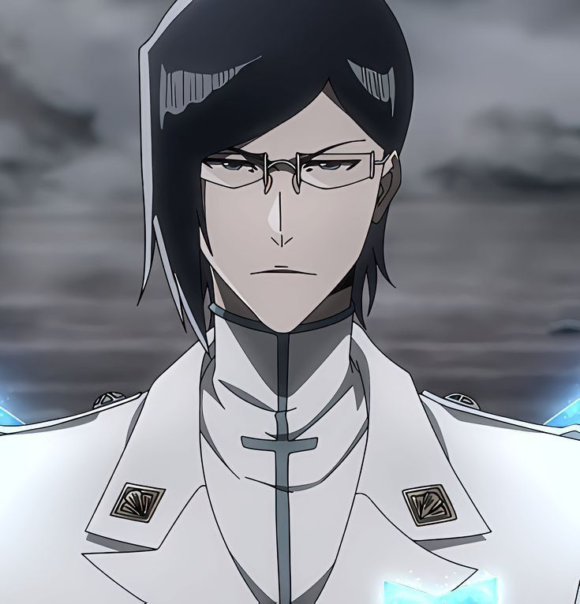
Uryu es el Quincy mas importante para el lector porque es la puerta de entrada real a este linaje. Al principio aparece como rival intelectual y tecnico de Ichigo, pero poco a poco se convierte en uno de sus aliados mas constantes. Su conflicto es especialmente interesante porque vive entre tres lealtades: su orgullo Quincy, su rechazo a parte del pasado de su familia y su vinculo real con los protagonistas.
- De que va: es un Quincy disciplinado, muy inteligente y mucho mas contenido que Ichigo.
- Estilo: combate con enorme precision, planificacion y tecnicas de reishi refinadas.
- Importancia: es el unico gran Quincy heroico durante buena parte de la serie y el mejor puente entre ambos bandos.
- Extra: su legado familiar, ligado a Soken y Ryuken Ishida, hace que su papel crezca muchisimo en la guerra final.
Lider supremo de los Quincy
Rey Quincy
Yhwach
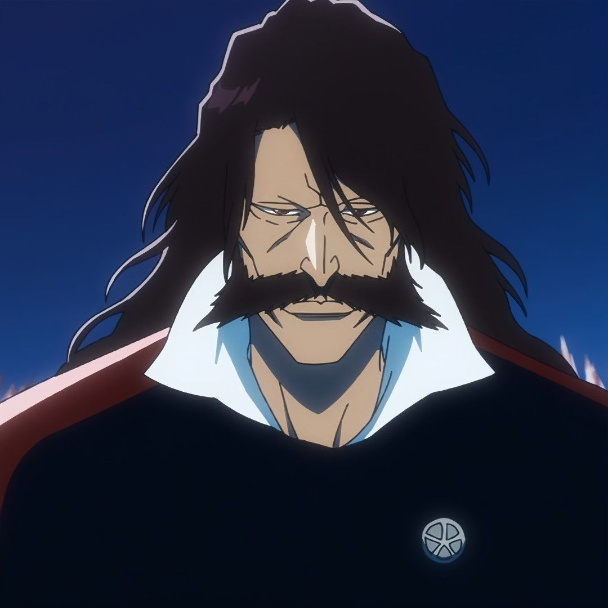
Yhwach es la cabeza total del imperio Quincy y uno de los villanos mas aplastantes de todo Bleach. No solo lidera militarmente, tambien funciona como origen, padre simbolico y centro espiritual de su pueblo. Su ambicion no es simplemente ganar una guerra: quiere reescribir la realidad y romper el orden impuesto por el Rey de las Almas y la Soul Society.
- De que va: rey de los Quincy e hijo del Rey de las Almas.
- The Almighty: puede observar futuros y alterar lineas de posibilidad, volviendose casi imposible de derrotar.
- Rol: convierte la guerra Quincy en un conflicto apocaliptico y no en una simple revancha historica.
Organizacion Quincy: el Wandenreich
Imperio oculto
El ejercito que espera en las sombras
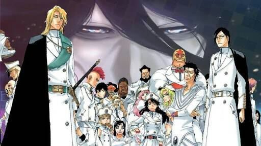
El Wandenreich es el gran imperio secreto Quincy, una estructura militar preparada durante siglos para atacar a la Soul Society desde dentro de su propia sombra. No es una banda improvisada: es una nacion de guerra con jerarquia, ideologia, tropas y una elite disenada para aplastar capitanes del Gotei 13.
- Su nombre queda ligado al gran asalto de la Thousand-Year Blood War.
- Su fuerza principal son los Sternritter, caballeros marcados por una letra y un poder especial.
- Su presencia cambia la sensacion de Bleach: deja de ser una serie de batallas puntuales y pasa a ser una invasion total.
Sternritter: la elite Quincy
Cada Sternritter recibe una letra, llamada Schrift, que define una capacidad especial. Eso hace que la elite Quincy sea una de las facciones mas locas y peligrosas de Bleach, porque no pelean todos con el mismo molde: cada uno rompe el combate de una forma distinta, desde manipular el miedo hasta volver real la imaginacion.
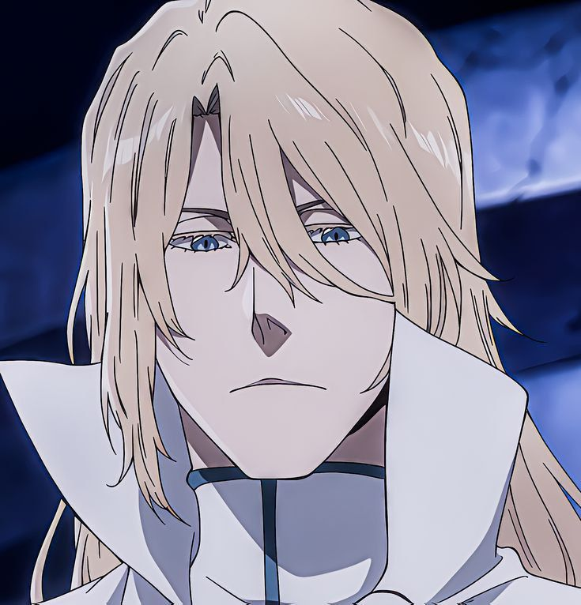
Jugram Haschwalth
Sternritter B - The BalanceDe que va: mano derecha de Yhwach y una de las figuras mas serias y estables del imperio.
Poder: redistribuye fortuna y desgracia entre el y el enemigo.
Rasgo: funciona como el reflejo mas sobrio del orden Quincy y del poder del rey.
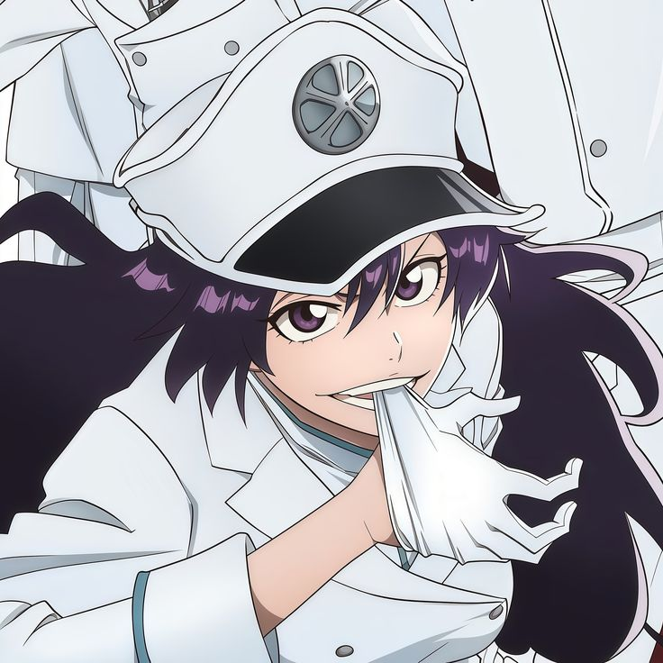
Bambietta Basterbine
Sternritter E - The ExplodeDe que va: combatiente extremadamente agresiva y una de las Quincy mas recordadas visualmente.
Poder: convierte lo que golpea en explosiones espirituales.
Rasgo: su estilo ofensivo directo la vuelve de las mas destructivas del grupo.
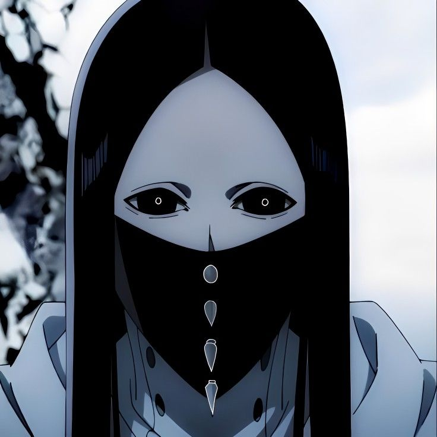
As Nodt
Sternritter F - The FearDe que va: uno de los Sternritter mas inquietantes y terrorificos de toda la guerra.
Poder: inocula un miedo extremo que destroza mentalmente al rival.
Rasgo: demuestra que los Quincy no solo ganan por fuerza, tambien por horror psicologico.
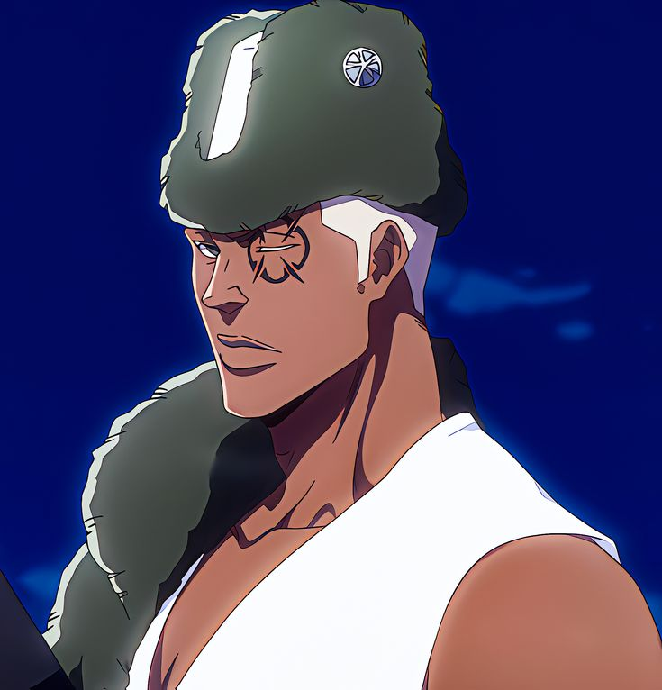
Lille Barro
Primer Sternritter de YhwachDe que va: figura casi angelical y uno de los ejecutores mas puros del rey.
Poder: dispara ataques de luz imposibles de esquivar y alcanza un estado casi intangible.
Rasgo: su presencia eleva la guerra a un nivel casi divino y absurdo.
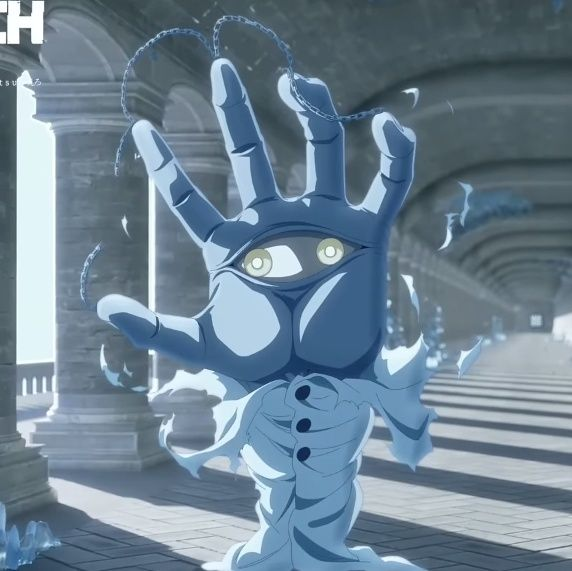
Pernida Parnkgjas
Parte del cuerpo del Rey de las AlmasDe que va: una de las entidades mas extranas y antinaturales del bando Quincy.
Poder: controla nervios, cuerpos y deformaciones organicas horribles.
Rasgo: es la prueba de que el arco Quincy se mete de lleno en lo cosmico y monstruoso.
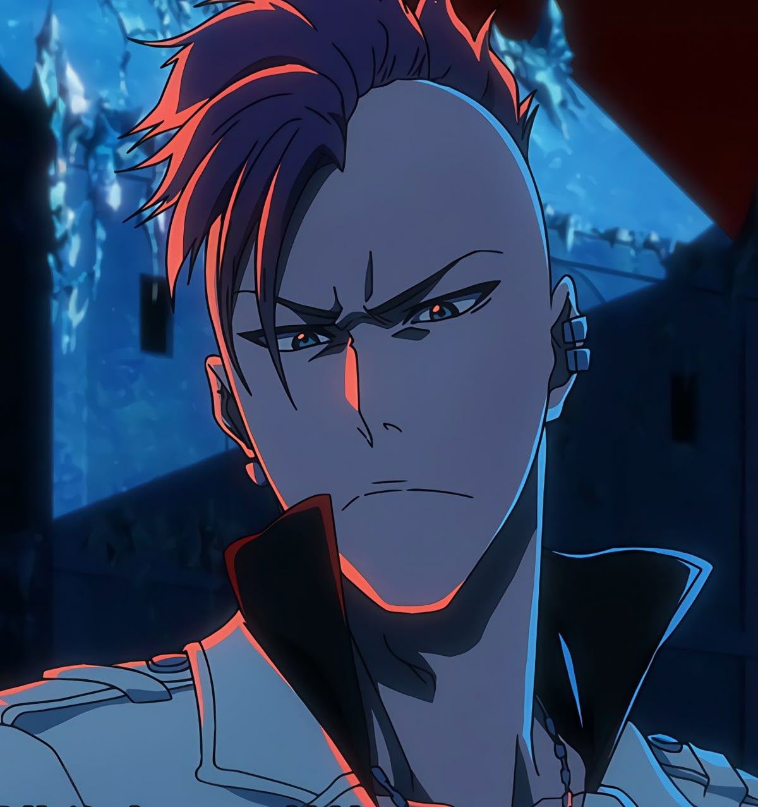
Bazz-B
Sternritter H - The HeatDe que va: guerrero orgulloso, agresivo y muy ligado al pasado de Jugram.
Poder: manipula fuego extremo y ataques de enorme potencia lineal.
Rasgo: mezcla carisma, rabia y una rivalidad interna muy potente dentro del imperio.
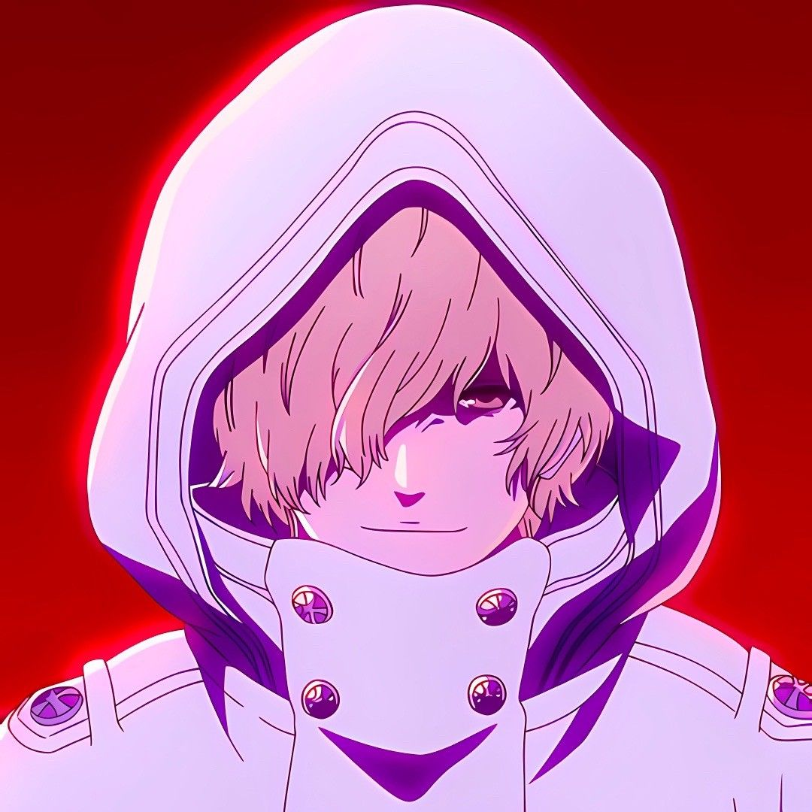
Gremmy Thoumeaux
Sternritter V - The VisionaryDe que va: Quincy con una capacidad tan rota que parece imposible de medir.
Poder: todo lo que imagina puede volverse real.
Rasgo: representa uno de los ejemplos mas claros de poderes absurdos dentro de la guerra final.
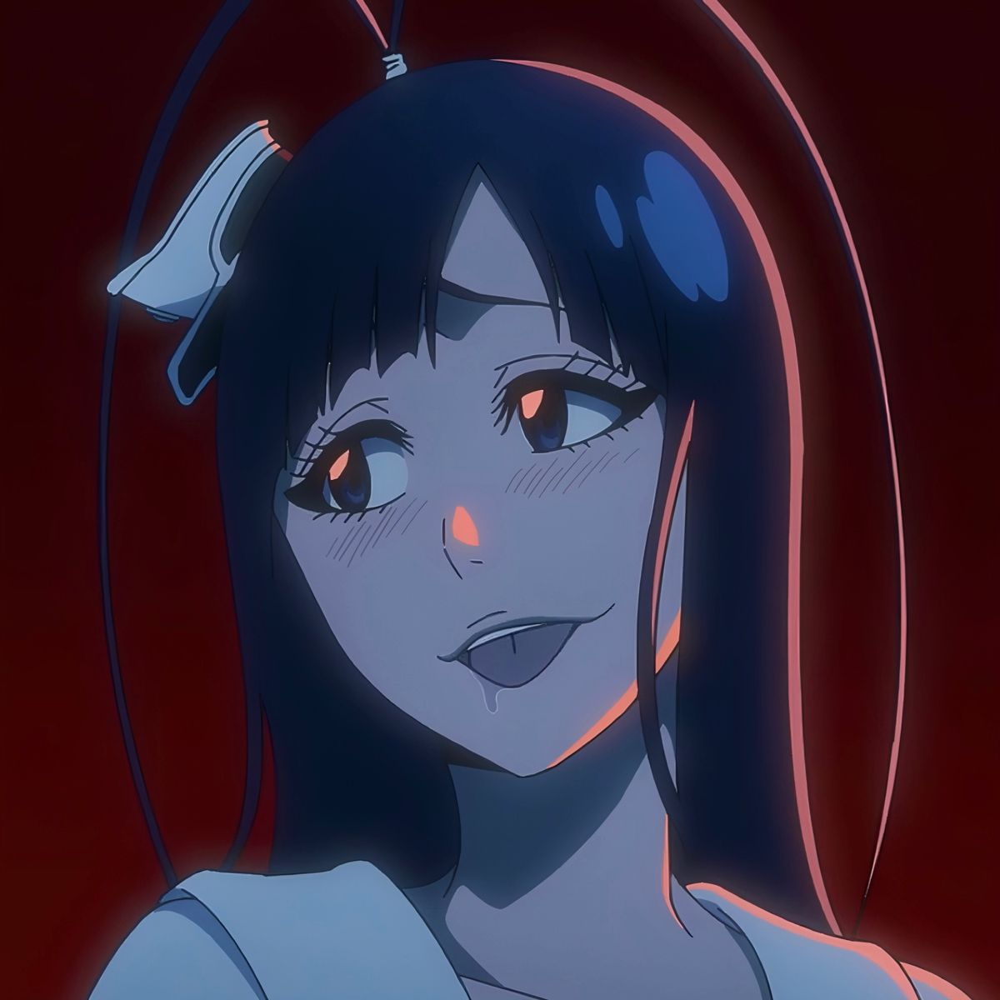
Giselle Gewelle
Sternritter Z - The ZombieDe que va: una de las Quincy mas perturbadoras por personalidad y tecnicas.
Poder: controla cuerpos muertos y los convierte en peones propios.
Rasgo: su presencia vuelve todavia mas macabra la parte final de la guerra.
Habilidades generales de los Quincy
- Manipulacion de reishi: absorben energia espiritual del ambiente y la moldean a voluntad.
- Arcos y flechas: su imagen clasica, pero tambien pueden crear cuchillas, plataformas y otras armas.
- Hirenkyaku: tecnica de movimiento veloz basada en deslizamiento espiritual.
- Blut Vene y Blut Arterie: sistemas internos de defensa y ataque que refuerzan su cuerpo.
- Letzt Stil y transformaciones afines: formas extremas de liberar su potencial a costa de grandes riesgos o cambios.
Quincy vs Shinigami
La guerra entre ambos bandos no es un malentendido puntual, sino un choque estructural. Los Shinigamis sostienen que destruir Hollows en masa rompe el equilibrio del universo, porque elimina almas en vez de reintegrarlas al ciclo. Los Quincy, en cambio, ven su metodo como una forma mas directa y efectiva de limpiar la amenaza. Esa diferencia convierte cualquier convivencia en algo casi imposible.
- Shinigami = purifican y preservan el ciclo.
- Quincy = destruyen y alteran el balance de almas.
- La Thousand-Year Blood War es la explosion final de ese choque historico.
Por que son tan importantes en Bleach
- Explican el pasado oculto de Uryu y amplian muchisimo su papel en la historia.
- Introducen una forma de combate completamente distinta al eje zanpakuto-bankai.
- Con Yhwach y el Wandenreich convierten el ultimo gran arco en una guerra de exterminio total.
- Sus poderes obligan a capitanes legendarios a pelear en el limite.
Curiosidades
- Uryu Ishida es el gran Quincy heroico, y por eso su posicion entre ambos bandos pesa tanto.
- Yhwach es uno de los villanos mas poderosos de Bleach, sobre todo por The Almighty.
- Los Sternritter no repiten esquema, cada letra abre un tipo de combate radicalmente distinto.
- Muchos Quincy absorben reishi del entorno casi sin limite aparente, lo que vuelve sus peleas muy tecnicas.